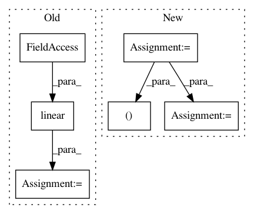

ea9252e21b93dbc8286490ecd865798c3ee07abc,basic/model.py,Model,_build_forward,#Model#,52
Before Change
Aq = tf.nn.embedding_lookup(word_emb_mat, self.q) // [N, JQ, d]
Ax = linear([Ax], d, False, scope="Ax_reshape", wd=config.wd, input_keep_prob=config.input_keep_prob,
is_train=self.is_train)
Aq = linear([Aq], d, False, scope="Aq_reshape", wd=config.wd, input_keep_prob=config.input_keep_prob,
is_train=self.is_train)
xx = tf.concat(3, [xxc, Ax]) // [N, M, JX, 2d]
qq = tf.concat(2, [qqc, Aq]) // [N, JQ, 2d]
After Change
config.batch_size, config.max_num_sents, config.max_sent_size, \
config.max_ques_size, config.word_vocab_size, config.char_vocab_size, config.hidden_size, \
config.max_word_size
dc, dw, dco = config.char_emb_size, config.word_emb_size, config.char_out_size
di = dw + dco
with tf.variable_scope("char_emb"):
char_emb_mat = tf.get_variable("char_emb_mat", shape=[VC, dc], dtype="float")
Acx = tf.nn.embedding_lookup(char_emb_mat, self.cx) // [N, M, JX, W, dc]
In pattern: SUPERPATTERN
Frequency: 3
Non-data size: 6
Instances
Project Name: wenwei202/iss-rnns
Commit Name: ea9252e21b93dbc8286490ecd865798c3ee07abc
Time: 2016-09-11
Author: seominjoon@gmail.com
File Name: basic/model.py
Class Name: Model
Method Name: _build_forward
Project Name: HyperGAN/HyperGAN
Commit Name: 4608f590d88eeaf1661e3911a7ee943f75269321
Time: 2017-06-07
Author: martyn@255bits.com
File Name: hypergan/losses/category_loss.py
Class Name: CategoryLoss
Method Name: _create
Project Name: NVIDIA/sentiment-discovery
Commit Name: 8030eeca74b6634f2a60168516573912aaa9cd65
Time: 2018-11-20
Author: raulp@nvidia.com
File Name: model/model.py
Class Name: TransformerFeaturizer
Method Name: forward